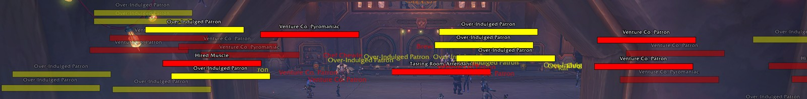
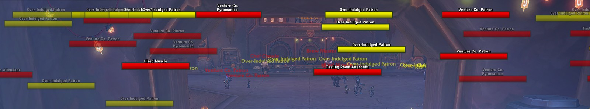
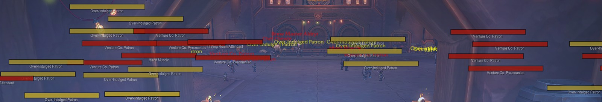
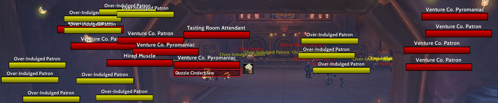

User guide · Beta
Plateau Nameplates
Enemy nameplates that stay fast and easy to read in a big pull, built to work inside Midnight's addon rules. A settings window with a live sample plate lets you click any part to edit it and drag it where you want it.
- Command:
/plt - Game: Retail (Midnight); WoW Forever in testing
- Language: English
Preview
Beta status
Plateau is in beta. It has been played in the open world and in Mythic dungeons. Raids, PvP and WoW Forever are still being tested, and some settings may change before the first release. A CurseForge release is coming later; until then, download it from GitHub.
Features
The plate
- Health bar with your choice of texture and border, health text as percent, value or both, and the name above, below or in any corner.
- Who the enemy is attacking, shown on the bar in that player's class color.
- Absorb shields, execute range tinting and marker lines, and boss phase lines at the percentages where the boss you're fighting changes phase.
- Icons: raid markers, elite, rare and boss badges, quest enemies, a Horde or Alliance crest on players, and how much of the Mythic+ enemy forces each enemy is worth.
- Your class resource (combo points, holy power, runes and so on) on your target's plate, only for specs that use one.
The cast bar
- Colors that follow your own interrupt: one while it's ready, another while it's on cooldown, and separate colors for casts Blizzard marks as important or that can't be interrupted.
- A line on the bar showing where your interrupt comes back during the cast.
- A glow on important casts, who the cast is aimed at, who interrupted it, and a short flash when it's interrupted.
- Optionally join the cast bar to the health bar inside one shared border.
Colors
- By enemy type: bosses, lieutenants, elites, casters, melee and minor enemies.
- Threat using the right rule for your role, with an off-tank color for enemies another tank is holding.
- Class colors for enemy players, your own reaction colors, and colorblind palettes.
Auras
- Your debuffs, crowd control, enemy buffs you can remove, and important auras, each placed and sized on its own.
- Buff warnings: a colored border, overlay and icon when an enemy gains an important buff, a big defensive, an enrage or a magic buff you can purge.
Target, focus and more
- Highlight your target and focus with glows, borders, arrows or brackets, and fade the plates you aren't targeting.
- Size enemies by type, grow casting enemies, and bring your target and casters to the front.
- Friendly names only, with an optional guild line under players and titles such as <Banker> under NPCs (open world and delves).
Installing
- Open the Plateau page on GitHub, click Code, then Download ZIP.
- Open the zip. Inside the
Plateau-mainfolder are two folders:PlateauandPlateau_Options. - Copy both into
World of Warcraft\._retail_\ Interface\ AddOns - Restart the game. A full restart is needed the first time, and whenever an update adds new files.
Only one nameplate addon at a time. If another one is enabled, Plateau offers to turn it off the first time it loads, since two would fight over the same plates.
Getting started
- The first time you log in, Plateau asks you to pick one of six ready-made looks. Click one to use it.
- Type
/pltto open the settings. A short tour shows you around the first time. - Click any part of the sample plate at the top of the window to jump to its settings, or drag it to move it.
You can also open the settings from the Plateau Nameplates button in the game menu (Escape), or from the minimap button.
The settings window
- Live preview
- A sample plate shows every change as you make it. Click a part to edit it; drag it to move it, and hold Shift to place it freely.
- Nameplate types
- Enemy is the base. Enemy player, Friendly, My target and My focus follow it and only differ where you change them.
- Undo and redo
- Every change is remembered by name, so you can step back several at once.
- Search
- Find any setting by name or by words in its description.
- Reset
- Right-click a setting to reset it, or reset the whole page with Reset this section.
- Help
- A Help page with 44 topics covering every page and the common how-tos.
Looks and profiles
Six ready-made looks are shown as live cards: Minimal (the default), Familiar layout, Classic unit frames, Compact, Clean and flat and Bold and crisp. Each is a profile you can keep tweaking, and a built-in one can be restored to how it shipped.
- Switch automatically: pick a profile for the open world, dungeons, raids, delves, or each specialization. Switches wait until combat ends.
- Share: export a profile as a text string and import it on another computer or give it to a friend.
How Midnight's rules affect Plateau
Since patch 12.0 the game hides some information from addons in combat and in instances, such as enemy health values, casts and which enemy a unit is. Plateau never reads or compares those hidden values; it hands them straight to the game's own functions, which is why cast colors, aura filters and buff warnings keep working in dungeons and raids.
A few things the game doesn't allow at all. Friendly nameplates are drawn by the game itself in dungeons, raids and arenas, and threat can be hidden in some fights. Any setting that depends on hidden information shows a warning icon, and its tooltip explains what happens.
Performance
Plateau is measured against Blizzard's own nameplates and the other popular nameplate addons with PlateBench, a benchmark addon that records every frame. In the first test, standing among 34 enemy nameplates with each addon's default settings, Plateau and Platynator had the best frame rates, about 7% above Blizzard's own nameplates, and Plateau used less CPU than every full nameplate replacement: 20% less than Platynator and about 18 times less than Plater.
How it's tested
- Where: the same places Platynator's author uses for his performance page. Cinderbrew idle stands just inside Cinderbrew Meadery (follower dungeon) with 34 enemy nameplates in view, without moving or pulling. Big pull chain-pulls the start of Nexus-Point Xenas.
- One addon at a time: only the addon being tested is enabled, and Blizzard's own nameplates are tested the same way as the baseline.
- Same conditions: same character, spot, camera and graphics settings, no FPS cap. Each run starts with a UI reload. Out of the box, it waits 20 seconds for loading to settle and measures for 60 seconds; the matched test waits 30 seconds and measures 30 seconds.
- Three runs each: the result is the median of three runs, so one unusual run can't decide it.
- Two setups: out of the box uses each addon's untouched defaults. Matched uses a profile named "lixard for testing" in every addon, set to show only the features all of them can match, so the differences come from how efficiently each addon draws them. Matched runs are only compared with other matched runs.
What's measured
- Average FPS
- Frames per second over the whole run. It depends mostly on your graphics card, so small differences are noise.
- 1% low FPS
- The average of the slowest 1% of frames. This is what you feel as smoothness.
- Hitches
- Frames slower than 50 ms, which you see as a stutter.
- Addon CPU
- Time the nameplate addon itself spends each frame, from the game's own addon profiler, also shown per nameplate. The most direct measure of how light an addon is.
- Memory churn
- Memory created per second, compared with Blizzard's run. Less churn means less garbage collection, which can cause stutters.
Results: Cinderbrew idle, out of the box
| Nameplates | Addon CPU per frame | CPU per nameplate | Average FPS | 1% low FPS | Memory churn over Blizzard | Hitches |
|---|---|---|---|---|---|---|
| Plateau | 0.010 ms | 0.0003 ms | 236.8 | 175.4 | +4.5 KB/s | 0 |
| BetterBlizzPlates | 0.007 ms* | 0.0002 ms* | 228.1 | 167.6 | +1.7 KB/s | 0 |
| EllesmereUI | 0.010 ms | 0.0003 ms | 224.8* | 159.7* | +6.0 KB/s | 0 |
| Platynator | 0.012 ms | 0.0004 ms | 236.9 | 181.8 | +5.4 KB/s | 0 |
| Threat Plates | 0.017 ms | 0.0005 ms | 162.5 | 121.8 | +2.7 KB/s | 0 |
| Plater | 0.179 ms | 0.0054 ms | 202.6 | 149.5 | +4.7 KB/s | 0 |
| Blizzard (baseline) | none | none | 220.4 | 169.3 | baseline | 0 |
Median of 3 runs each, 34 enemy nameplates, 2560x1440, October 10, 2026. Plateau and Platynator have the same average FPS; Platynator's 1% low is 3.5% higher, a small gap that the matched test will check. *BetterBlizzPlates restyles Blizzard's own nameplates, so the game's nameplate work isn't counted in its CPU. EllesmereUI's frame rate includes its other UI modules, which were loaded for its runs, so it isn't directly comparable. Threat Plates uses little addon CPU but has the lowest frame rate, so most of its cost is in drawing, outside its own code. Out of the box the addons don't show the same things: Platynator's defaults show only a bar and health text on minor enemies, while Plateau shows its full layout. The matched setup and the big pull are still being tested and will be added here.
How the plates look: matched profile
These are from the matched "lixard for testing" runs: each addon shows the same enemy nameplates (about 36) in the same spot in Cinderbrew Meadery, cropped to the nameplates only. Red and yellow are the addons' threat colors. Each addon draws them in its own way: Threat Plates keeps every plate bright, while Plater, Platynator and Plateau fade the farther ones. Bar sizes are close but not exactly matched.




Commands
| Type this | To do this |
|---|---|
/plt | Open the settings. /plateau also works. |
/plt setup | Pick a ready-made look. |
/plt minimap | Show or hide the minimap button. |
/plt debug | Print the version, memory and CPU numbers. Paste it when you report a bug. |
/plt debug reset | Start counting slow frames from now. |
/plt reset | Put every setting in the current profile back to its default. |
/plt cvars restore | Undo every game nameplate setting Plateau changed. |
Tips and FAQ
Something looks wrong after an update.
Type /reload. If the update added new files, restart the game fully, since a reload doesn't load new files.
A plate is the wrong color.
Colors on the Health bar page are checked top to bottom, and your target and focus colors win over all of them. Threat and tagged colors win over enemy type colors. /plt debug with the enemy targeted tells you which rule picked the color.
Why don't friendly nameplates change in dungeons?
The game locks friendly nameplates in dungeons, raids and arenas and draws them itself. Plateau's friendly options apply in the open world and in delves.
I want my old game nameplate settings back.
Plateau remembers every game setting it changes. Type /plt cvars restore to put them all back, or right-click one on the Game settings page.
Is it available in other languages?
Plateau is in English for now, and translations are welcome. Every string can be translated, and the license allows you to edit the language files to send one in; translators are credited. The translation guide explains how.
How do I report a bug?
Copy the error from BugSack (or the game's error window) and the output of /plt debug, and open an issue on the GitHub page.